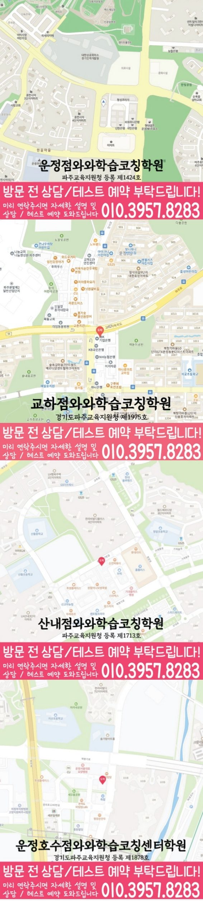

ELEMENTARY ENGLISH
운정중앙 초등 영어학원
운정중앙 초등 영어학원 선택 전 실행할 수 있는 영어 학습 계획을 세우는 방법, 복습·과제 루틴과 문장 읽기의 현재선, 학교 영어와 가정 복습 순서를 확인하세요.
01 Quick answer
운정중앙 초등 영어: 복습·과제 루틴과 문장 읽기 점검
운정중앙 상담을 준비할 때는 ‘실행할 수 있는 영어 학습 계획을 세우는 방법’을 자료·행동·재확인의 흐름에 따라 정리하세요. 확인 자료: 단어·문장 읽기·쓰기 기록을 먼저 봅니다. 운정중앙 기록에서 ‘시작·완료 시각, 읽은 문장과 다음에 물어볼 내용을 적은 주간 기록’을 찾고 도움 전후로 달라진 부분과 날짜를 남기세요. 이번 주 행동: ‘매일 할 최소 분량과 도움을 요청할 항목을 나누고 완료 흔적을 남기기’를 먼저 실행하세요. 재확인 기준: ‘한 주 뒤 미완료 이유와 반복된 어려움을 보고 분량을 스스로 조정하는지’를 살핀 뒤 첫날과 달라진 점을 적으세요.
확인 기준
운정중앙 학생의 복습·과제 루틴 관련 활동을 시작할 날짜와 문장 읽기를 확인할 날짜를 나란히 적되 학년·시간표는 이용 조건으로 구분합니다.



010-6839-8283010-6839-8283010-6839-8283010-6839-8283학습 답변 요약
핵심 주제는 ‘실행할 수 있는 영어 학습 계획을 세우는 방법’입니다. 복습·과제 루틴과 문장 읽기의 현재선을 확인하고 기초 문법과 기초 어휘 관련 활동·점검 기록과 학교·센터 사실을 분리해 살펴봅니다.
운정중앙 초등 영어: 실행할 수 있는 영어 학습 계획을 세우는 방법
운정중앙에서 살필 초등 영어 주제는 ‘복습·과제 루틴과 문장 읽기의 현재선’입니다. 학생에게 ‘정한 영어 활동이 실제 완료 기록과 다음 날의 짧은 다시 확인으로 이어지는지’를 묻고 답을 최근 학습 기록과 비교하세요.
‘실행할 수 있는 영어 학습 계획을 세우는 방법’은 결과를 약속하는 문구가 아니라 현재 기록과 다음 행동을 잇는 점검 주제입니다. 복습·과제 루틴과 문장 읽기의 자료 위치를 나누고, 이번 주 한 행동과 재확인 결과를 같은 형식으로 남기세요. ‘실행할 수 있는 영어 학습 계획을 세우는 방법’을 구체화하려면 복습·과제 루틴 자료 한 곳을 고릅니다. 막힌 위치·이번 행동·재확인 항목을 세 칸에 나누고, 마지막 칸에는 완료 여부·미완료 이유·조정한 분량을 적어 다음 분량을 정하세요.
복습·과제 루틴과 문장 읽기 기록이 보여 주는 영어 학습의 현재선
진단 자료에서는 ‘시작·완료 시각, 읽은 문장과 다음에 물어볼 내용을 적은 주간 기록’과 ‘읽다가 멈춘 문장과 낱말 순서를 잘못 짚어 뜻이 달라진 위치’를 한 곳씩 표시하세요. 각 근거가 있는 자료의 위치와 날짜를 적고, 처음 확인한 상태와 도움 뒤 다시 확인한 상태를 나누어 남기세요.
운정중앙 상담 메모에는 복습·과제 루틴의 자료와 문장 읽기의 자료를 별도 항목으로 적으세요. 한쪽의 재확인 결과를 다른 쪽의 변화로 해석하지 않는 것이 중요합니다.
복습·과제 루틴과 문장 읽기: 학교 일정과 다음 확인 날짜를 정하는 기준
주간 계획·완료 여부를 볼 날짜와 문장을 읽고 멈춘 곳·설명한 내용의 기록을 볼 날짜를 다른 줄에 적으세요. 각 날짜에 아이가 혼자 마친 범위와 도움받은 지점도 함께 기록합니다.
운정중앙에서는 복습·과제 루틴을 확인할 주간 계획·완료 여부와 문장 읽기를 확인할 문장을 읽고 멈춘 곳·설명한 내용의 기록을 다른 줄에 둡니다. ‘매일 할 최소 분량과 도움을 요청할 항목을 나누고 완료 흔적을 남기기’와 ‘짧은 문장을 의미 덩어리로 끊어 읽고 그림이나 상황과 연결해 설명하기’를 각각 해당 자료에서 짧게 실행하세요. 아이에게 두 자료에서 혼자 끝낸 부분을 짚게 하고, 도움이 남은 기능만 날짜를 정해 다시 확인하세요.
‘실행할 수 있는 영어 학습 계획을 세우는 방법’을 확인한 날에는 두 자료의 첫 결과와 재확인 결과를 다른 줄에 적으세요. 완료 여부·미완료 이유·조정한 분량과 새 문장의 의미 덩어리를 설명한 결과를 각각 해당 자료의 첫 기록과 대조합니다.
운정중앙 학년·개설 정보와 복습·과제 루틴 항목 구분
상담 준비용 학교명은 초롱초 등으로 정리돼 있으나, 현재 개설 범위와 학교별 학습 자료 반영 여부는 상담에서 확인해야 합니다.
현재 페이지의 영어 가능 학년은 초1·초2·초3·초4·초5·초6으로 기재돼 있습니다. 아이의 복습·과제 루틴과 문장 읽기 상태는 최근 자료로 살피고, 실제 시간표는 상담 시점에 따로 확인하세요. 이 페이지의 센터 기준은 와와학습코칭센터 운정중앙점, 제공 위치는 경기도 파주시 양지로 131, 운정SB타워 509호,510호 (동패동)입니다. 교습비 자료와 제공 주소까지의 이동 시간은 서로 다른 사실 항목으로 적으세요.
복습·과제 루틴과 문장 읽기의 이번 주 행동을 정하는 7일 실행안
기준선 자료로 ‘시작·완료 시각, 읽은 문장과 다음에 물어볼 내용을 적은 주간 기록’을 남겨 두세요. 7일 동안 ‘매일 할 최소 분량과 도움을 요청할 항목을 나누고 완료 흔적을 남기기’를 해 보고 도움을 받은 지점과 혼자 한 지점을 구분합니다.
7일 뒤에는 ‘한 주 뒤 미완료 이유와 반복된 어려움을 보고 분량을 스스로 조정하는지’를 다시 살핍니다. 아이가 재확인 기준을 혼자 충족하면 ‘짧은 문장을 의미 덩어리로 끊어 읽고 그림이나 상황과 연결해 설명하기’로 넘어가고, 어렵다면 첫 행동을 더 작은 분량으로 반복하세요. 재확인 뒤 문장 읽기 관련 행동으로 옮기기로 했다면 이 주제를 위한 계획에 해당 영역의 기록일과 재확인일을 나눠 적으세요. 실행 전후 기록을 비교해 새 문장의 의미 덩어리를 설명한 결과를 확인합니다.
복습·과제 루틴과 문장 읽기 답변을 실행 계획으로 바꾸는 상담 메모
최근에 푼 학습지 한 장과 현재 사용하는 교재를 준비하세요. 첫 질문은 ‘과제량보다 완료·다시 확인·계획 수정의 주기를 어떻게 살피는지’, 두 번째는 ‘번역한 답보다 문장 순서를 스스로 짚는 과정을 어떻게 살피는지’입니다.
상담 메모에는 분량·도움 항목 기록 활동을 실행할 날짜와 ‘한 주 뒤 미완료 이유와 반복된 어려움을 보고 분량을 스스로 조정하는지’를 같은 영역의 자료로 다시 볼 날짜가 남아야 합니다. 센터 이용 조건은 별도 목록으로 구분하세요.
- 아이 자료복습·과제 루틴을 확인할 자료 위치와 아이가 도움 뒤 다시 한 흔적
- 학습 일정실행 날짜: ‘짧은 문장을 의미 덩어리로 끊어 읽고 그림이나 상황과 연결해 설명하기’ / 재확인 날짜: ‘낱말이 일부 바뀐 새 문장에서도 의미 덩어리를 나누어 뜻을 말하는지’
- 재확인복습·과제 루틴 기록을 다시 볼 날짜와 그날 비교할 완료 여부·미완료 이유·조정한 분량
- 이용 조건영어 가능 학년(초1·초2·초3·초4·초5·초6)·시간표·교습비·통학 동선
02 Parent perspective
운정중앙 초등 영어 학부모 상담 상황
아래 운정중앙 초등 영어 상담 장면은 실제 이용 후기나 특정 학생의 성과가 아닌 준비용 가상 예시입니다. 학습 결과는 학생의 출발점과 실천 정도에 따라 달라질 수 있습니다.
운정중앙 학부모가 ‘아이의 복습·과제 루틴 기록’을 상담 주제로 삼은 가상 상황입니다. 학생은 분량·도움 항목 기록 활동을 해 보고, 학부모는 완료 여부·미완료 이유·조정한 분량을 살필 날짜를 묻습니다.
운정중앙 상담 뒤 등록 여부를 비교하는 가상 장면입니다. 학부모는 영어 가능 학년(초1·초2·초3·초4·초5·초6)·교습비·시간표를 사실 항목으로 적고 기초 문법을 살필 날짜는 학습 계획에 따로 남깁니다.
03 FAQ
운정중앙 초등 영어 자주 묻는 질문
학생 자료, 가능 학년과 실제 이용 조건을 나누어 답했습니다.
운정중앙 초등 영어에서 ‘복습·과제 루틴의 현재선 확인’은 어떤 자료부터 확인하나요?
최근에 푼 학습지 한 장에서 ‘시작·완료 시각, 읽은 문장과 다음에 물어볼 내용을 적은 주간 기록’을 기준선으로 남깁니다. 첫 행동은 ‘매일 할 최소 분량과 도움을 요청할 항목을 나누고 완료 흔적을 남기기’, 일주일 뒤 확인 질문은 ‘한 주 뒤 미완료 이유와 반복된 어려움을 보고 분량을 스스로 조정하는지’입니다.
복습·과제 루틴과 문장 읽기 진단 기록은 어떻게 나누나요?
첫 자료에서 복습·과제 루틴을 확인할 때와 문장 읽기를 확인할 때 막힌 위치를 각각 표시합니다. 같은 날 다시 보더라도 완료 여부·미완료 이유·조정한 분량과 새 문장의 의미 덩어리를 설명한 결과는 다른 칸에 남기세요.
복습·과제 루틴과 문장 읽기: 주간 계획·완료 여부와 문장을 읽고 멈춘 곳·설명한 내용의 기록은 어떻게 나눠 확인하나요?
첫 칸에는 복습·과제 루틴을 확인한 자료 위치·실행일·완료 여부·미완료 이유·조정한 분량을, 둘째 칸에는 문장 읽기를 확인한 자료 위치·실행일·새 문장의 의미 덩어리를 설명한 결과를 적으세요. 같은 날 확인해도 결과는 자료별로 판단합니다.
상담 전 기초 문법과 기초 어휘를 확인하려면 어떤 자료를 가져가나요?
기초 문법은 ‘처음 쓴 문장과 규칙을 확인한 뒤 스스로 고친 부분’, 기초 어휘는 ‘단어를 확인한 기록과 문장 속 같은 낱말의 뜻을 떠올린 흔적’이 남은 최근 자료로 확인하세요. 이어 ‘암기량이 아니라 문장 속에서 낱말을 다시 알아보는지를 어떻게 확인하는지’를 묻고 확인일을 정합니다.
운정중앙 초등 영어 상담에서 가능 학년과 참고 학교는 어떻게 확인하나요?
운정중앙 페이지의 제공 자료 기준 영어 가능 학년은 초1·초2·초3·초4·초5·초6입니다. 이 표기와 현재 시간표가 일치하는지 상담에서 확인하세요. 페이지에서 확인되는 학교는 초롱초 등이며 모든 과정의 개설을 뜻하지 않습니다. 학생이 다니는 학교의 학습 일정과 자료 반영 가능 여부를 직접 확인하세요.
04 Related
운정중앙 관련 학원·상담 페이지
같은 지역의 과목 조합과 학년 카테고리, 앞뒤 지역 안내를 함께 확인하세요.